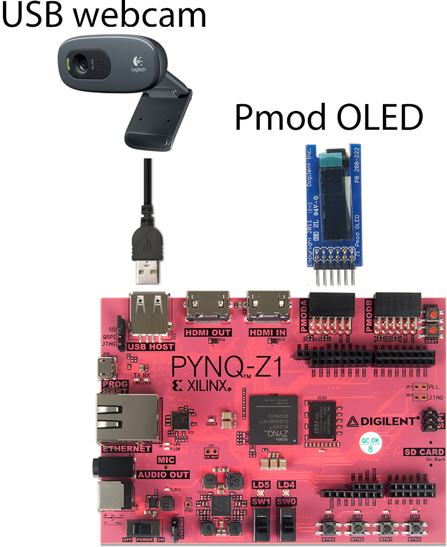

By: William Scotten
What is it?
There are many ways to solve the Rubik's cube. If you are a speed cuber, you memorize many algorithms so you make as little moves as possible. If you are brand new, you will probably look up a video on Youtube, and you will learn the layer-by-layer approach. If you are lazy, you can use a website like https://rubiks-cube-solver.com/ which will allow you to plug in the orientation of your cube, and give you the solution in 20 moves or less (God's Number).
For this project, I plan to make a Rubik's cube solver, using the Pynq board from Xilinx. The user will be able to take pictures of their board with the usb webcam, and receive the solution step-by-step from the Pmod OLED.
Features
- A welcome screen when the user first boots up the program, displayed on the Pmod OLED.
- Gaining the pictures of the cube will be done by the Pynq Board's buttons. When pressed, each button will tell the webcam to take a picture, and depending on which button is pressed, the board will store the parsed picture as that respective side in the program.
- The OLED will respond to the user after each picture is taken, and tell them the colors registered. The user can then choose to take a picture of a different side, or retake the picture if the colors obtained are inaccurate.
- When all pictures are taken, the OLED will say that the board is calculating the solution. When finished, the OLED will display the first move to the user, and the number of moves remaining.
- Allow the user to take additional pictures during their solving process, and have the board confirm that the side's pieces are the correct ones.
- After the final move is complete, the user will be able to scramble the cube, and start taking the pictures again
Potential Features (given time)
- Incorporate the God's Number algorithm, and allow the user to choose which way the cube gets solved.

Current Progress
- All of the parts have been purchased.
- USB webcam can take a picture of the cube, and the board can construct the side's colors.
- Website/Github initialized
Week 5
- Project proposal, website, and video.have the board extract the side's colors.
Week 6
- Have each button take the respective picture of the cube's side. Get the board to construct the cube internally, calculate the solution, and print out the output in Jupyter.
Week 7
- Have the Pmod OLED display each move step by step, and display the remaining moves.
Week 8
- Add error checking, allow the user to take additional pictures during the solving process.
Week 9
- Add God's Method Algorithm (if time permits)
Week 10
- Write final report, update website/Github.